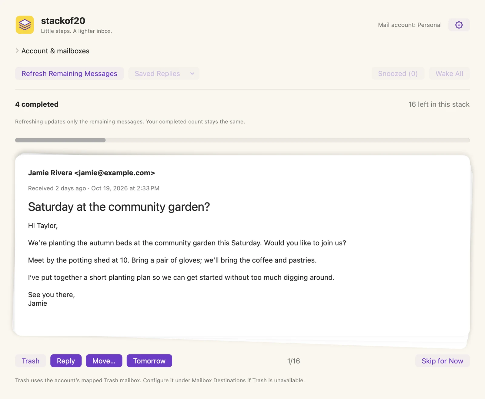
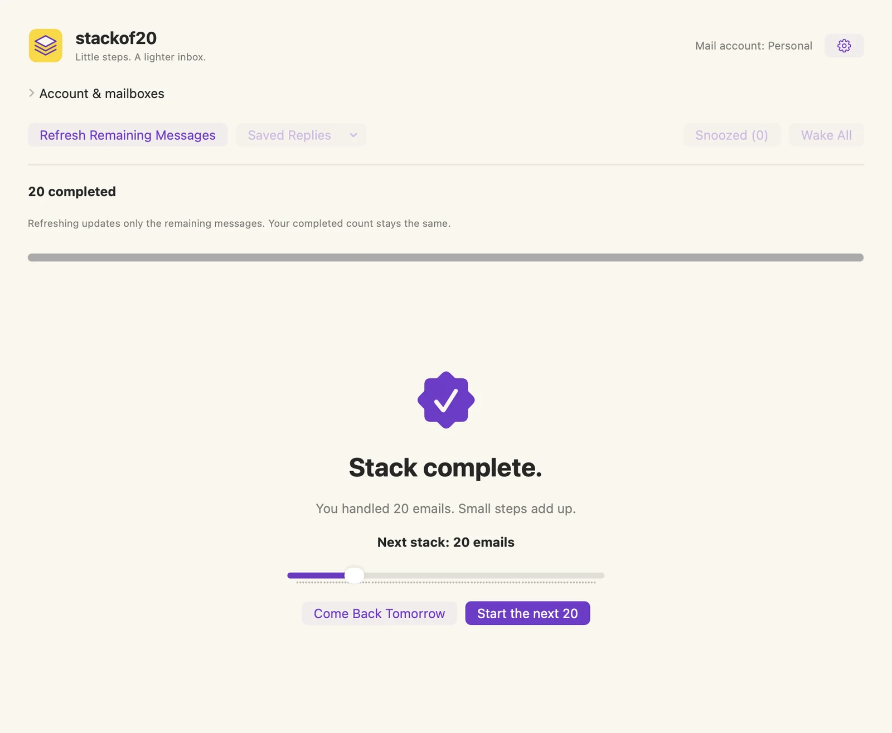
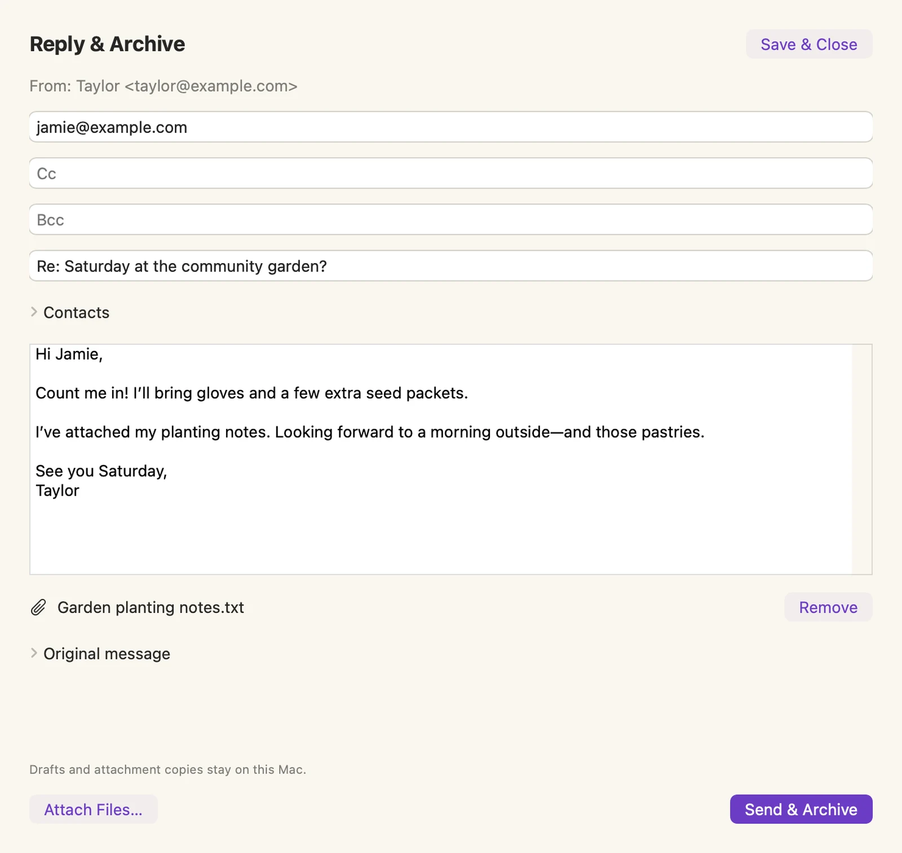
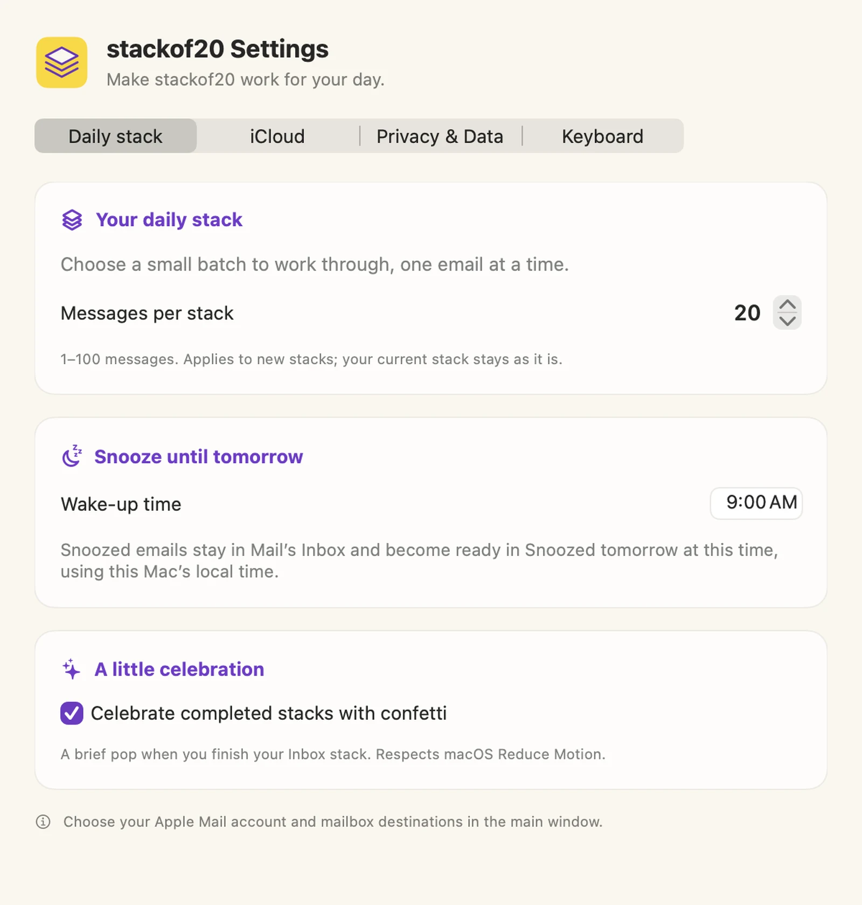
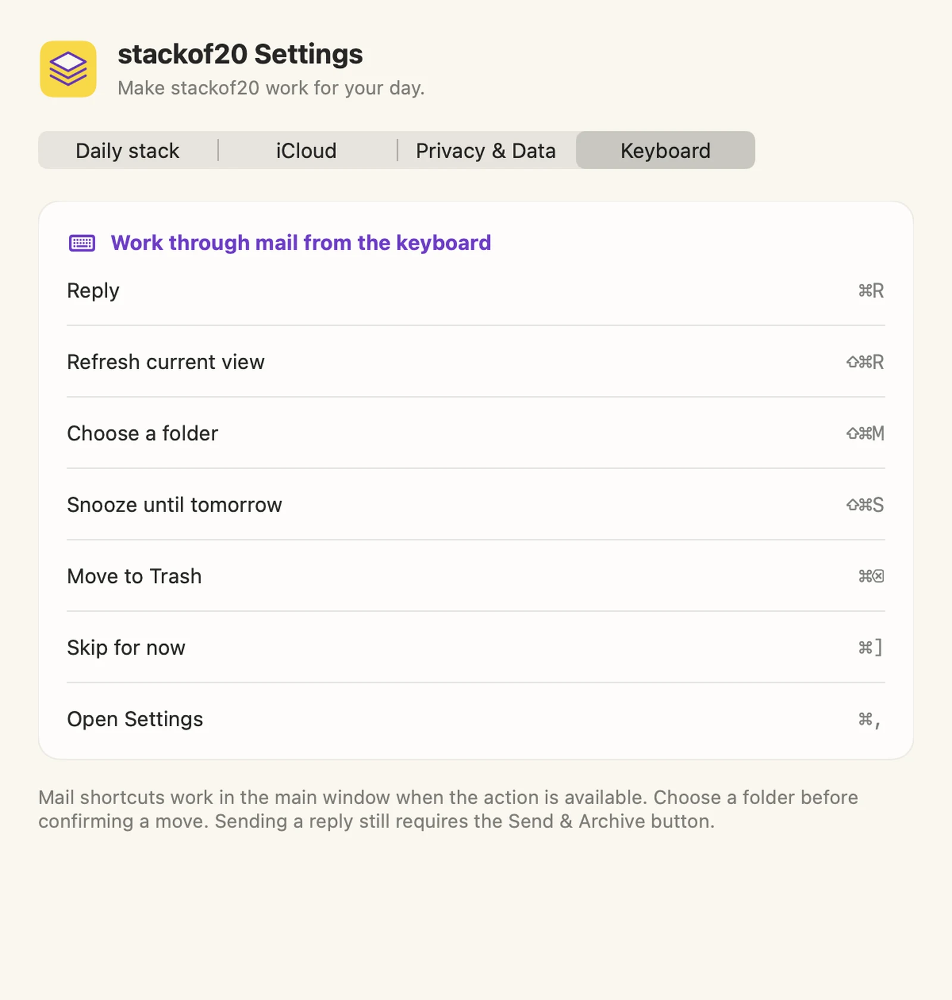

A little mail.
A little momentum.
Here’s what the controls mean, what happens to your mail, and how to pick up where you left off.
stackof20 is still in development. This guide describes the current app. All screenshots use fictional data.
1. Start with Apple Mail.
- Set up your account in Apple Mail first. stackof20 requires macOS 14 or later. Let Mail finish downloading and syncing messages, especially on a newly set up Mac.
- Allow Mail access when macOS asks. stackof20 needs Automation permission to work with Apple Mail. You do not enter your mail password into stackof20.
- Expand Account & mailboxes. Pick the Mail account and Inbox you want to work on. The label at the top right shows the selected Mail account; it is not your iCloud sync status.
- Check Mailbox Destinations. Choose that account’s existing Inbox, Archive, Sent, and Trash mailboxes. Names vary by provider: for example, Trash may be called Deleted Messages. stackof20 creates no special folders.
- Choose Open Stack. Start with a manageable batch of eligible messages. The default is 20; your saved stack can contain fewer if fewer messages are available.
If you’re setting up a second Mac with iCloud sync, let its first sync finish in Settings before opening a stack, so it can receive your existing progress.

One email at a time.
The sender, received age, full date, and subject help you recognize a message before deciding what to do.
View full-size screenshot →2. Decide what happens next.
These actions work with the message in your selected Apple Mail account. Moving or sending mail has a real effect in Apple Mail and at your mail provider.
- Trash
- Moves the message to your account’s mapped Trash mailbox. This is not an immediate permanent-delete command; your provider’s Trash rules still apply.
- Reply
- Opens the Reply & Archive composer. Opening or saving a reply does not send it or complete the message. Choose Send & Archive when you’re ready.
- Move…
- Files the message in an existing mailbox you select. Search for a folder, select it, then choose Move.
- Tomorrow
- Defers the email until your chosen local wake-up time tomorrow. It counts as handled for this stack and stays in Apple Mail’s Inbox. Revisit it in Snoozed.
- Skip for Now
- Shows the next remaining email without making a decision on this one. It does not move, snooze, or complete the message. It stays in the current stack.
3. Read your progress at a glance.
- Completed
- The decisions already handled in this stack: confirmed moves to Trash or another mailbox, completed Reply & Archive actions, and emails snoozed for later. It is not your current email’s number or a count of unread mail.
- Left in this stack
- The remaining decisions in this batch. This does not describe every message in your Mail inbox.
- The card counter
- A label such as 1/16 means you’re viewing the first of the 16 currently loaded remaining messages. It is separate from the completed count.
- Refresh Remaining Messages
- Refreshes the unfinished portion with the newest eligible Inbox messages while preserving your completed count. It does not start a new stack or pull snoozed messages into the regular stack.
- Stack complete
- You’ve finished this batch. Choose Come Back Tomorrow to pause, or set the next stack size and start another. Your entire inbox may still contain mail.
Example: “4 completed” and “16 left in this stack” means four decisions are done and sixteen remain. Refreshing can change which eligible message appears first, while those four completed decisions stay counted.

A finish line you can reach.
Finish a small stack, then decide whether to stop or keep going.
View full-size screenshot →4. Keep “later” in its own place.
Tomorrow keeps the message in Apple Mail’s Inbox, but takes it out of your regular stackof20 stack. Its wake-up time comes from Settings → Daily stack and uses this Mac’s local time.
Snoozed (n) opens a dedicated review of deferred messages, up to your messages-per-stack limit. The number refers to saved snoozed messages, not unread mail. Messages show their snooze status so you can see whether they’re ready or still scheduled.
Wake All makes the selected account’s snoozed messages ready now and opens the snoozed review. It does not pad that review with new undecided Inbox messages. When a scheduled time arrives, the email stays in Snoozed for you to handle there.
Reply, move, or trash a snoozed message to handle it, or choose Tomorrow to defer it again. Choose Back to Inbox Stack to return to your saved regular stack. Progress in this review is labeled reviewed.
5. Reply, with the details you need.
- Check the recipients and subject. To, Cc, and Bcc accept complete email addresses separated by commas. Cc sends a visible copy; Bcc sends a copy without listing that recipient to the other recipients.
- Write your message. Expand Original message to refer back to the email. Save & Close keeps the draft on this Mac; reopen it from Saved Replies.
- Add a file if you need one. Attach Files makes a local copy for the saved reply. Remove takes it out of that draft. Your original file is not deleted.
- Use Contacts if you want suggestions. Contacts access is optional and requested only when you choose to use it. You can always type complete addresses manually.
- Choose Send & Archive. stackof20 asks Apple Mail to send the reply, checks for confirmation in Sent, then moves the original to the mapped Archive mailbox.
If sending is unconfirmed, do not immediately send another reply. Check Apple Mail’s Sent and Outbox, then use Check Sent in the saved reply to check the existing attempt. If the reply is sent but archiving is unfinished, Archive Original Only completes the filing step without sending again.
Saved reply text and attachment copies stay on the Mac where you created them. They do not travel through stackof20’s iCloud sync.

A reply and a place for the original.
A fictional reply and attachment. No real email was sent to make this screenshot.
View full-size screenshot →6. Set your pace. Keep your place.
Daily stack
Choose 1–100 messages for new stacks. Changing this setting does not resize your current saved stack. Choose the local time for tomorrow’s snoozes, and turn the completion confetti on or off. Confetti respects macOS Reduce Motion.
iCloud
Optional iCloud sync carries settings, snoozes, mailbox choices, and stack progress through your personal iCloud account. Use the same iCloud account and configure the corresponding Apple Mail account on both Macs. Let Mail finish downloading, then let stackof20’s first sync finish before opening a stack on a new Mac.
Check the sync status in Settings → iCloud, or choose Sync Now. Email bodies, saved replies, attachments, and contacts are not uploaded by stackof20’s sync. Turning sync off keeps existing data on this Mac and in iCloud; it does not erase it.
Privacy & Data
Read the privacy information or clear eligible saved reply text and attachment copies on this Mac. Open composers and unresolved sends or archives remain protected. Minimal content-free completion markers remain to help prevent duplicate replies. This control does not delete mail from your provider.
Keyboard
A reference for the app’s Command-key shortcuts. These operate in the main window when the action is available; typing in a reply does not trigger inbox actions.

A routine that fits your day.
Twenty is the default, not a requirement.
View full-size screenshot →7. Move through mail with the keyboard.
| Action | Shortcut |
|---|---|
| Reply | ⌘ R |
| Refresh current view | ⇧ ⌘ R |
| Choose a folder | ⇧ ⌘ M |
| Snooze until tomorrow | ⇧ ⌘ S |
| Move to Trash | ⌘ Delete |
| Skip for now | ⌘ ] |
| Open Settings | ⌘ , |
In the Move picker, type part of a folder name, press Tab to focus the results, use ↑ and ↓ to choose a match, then press Return to move. Shift Tab returns to search; Esc cancels. A matching folder must be selected before Move can confirm.
Sending a reply still requires the Send & Archive button.

The shortcuts are in the app, too.
Open Settings → Keyboard whenever you need a reminder.
View full-size screenshot →A few common questions.
Why don’t I see the same messages as Apple Mail yet?
stackof20 reads the selected account and mailbox through Apple Mail. Check those choices and let Mail finish downloading or syncing, then use Refresh Remaining Messages. Snoozed messages are intentionally kept in their separate review. If an error remains, contact support with the error text and app version, without private mail content.
Does “completed” mean the message is gone forever?
No. It means you’ve handled that decision in this stack. Moved or archived mail lives in the destination you chose. Trash follows your provider’s retention rules. Snoozed mail stays in Mail’s Inbox. Skip for Now leaves the decision unfinished.
Where do I change the account or folders?
Expand Account & mailboxes in the main window, then choose the account, Inbox, and Mailbox Destinations. The gear opens the app’s Daily stack, iCloud, Privacy & Data, and Keyboard settings.
Can I continue on my other Mac?
Yes, with optional iCloud sync enabled on both Macs, the same iCloud account, and the corresponding account set up and downloaded in Apple Mail. Let sync finish before switching. Saved reply drafts and attachment copies remain on the Mac where you created them.
Can BACS Tech, Inc. read my inbox?
We do not receive your inbox or reply content. The app has no ads, analytics, or tracking. Read the privacy policy for details about local storage, Apple Mail, and optional iCloud sync.
Still need a hand?
Get support or email hello@stackof20.com.